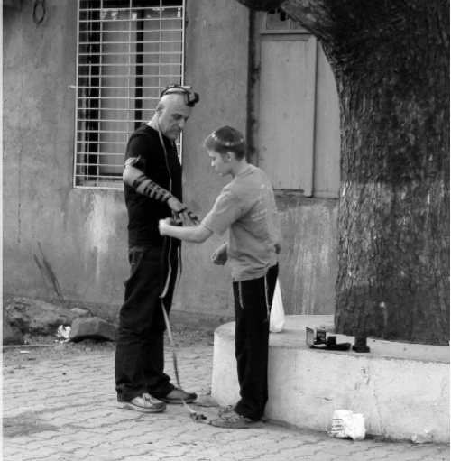

House Arrest in the Chabad House of Poona, India
Daniel Efrati, a philosopher and lecturer, categorized himself as a Tel Avivian bohemian. He found himself living through a distressful saga when he was jailed in Poona, India. The shluchim, R’ Betzalel Kupchik and his wife Rochel, supported him throughout the painful ordeal. When he was released under house arrest, he stayed at the Chabad house for nearly four months where he became acquainted with Judaism and his perspective on life changed.

At a certain point, he made a trip to India, as many Israelis do. He was considering a joint research project in philosophy with the local university of Poona. He was 54 when he went on this trip. There, in India, his entire world turned upside-down for the worse, or perhaps for the better, depending on your perspective.
This was Iyar 5769, four and a half years ago. His story is told in a series of family letters written by R’ Betzalel and his wife Rochel Kupchik to their children in Eretz Yisroel. The beginning of the story is in a letter written by 12-year-old Yinon Kupchik, their son, and a shliach in his own right.
B”H
Yechi HaMelech HaMoshiach!
Last week, a man came to the Chabad house by the name of Daniel. According to his philosophy (he is a bald philosopher holding a doctoral degree), which he thought up on the train from Delhi to Poona (30 hours … of course he had plenty of time to think), he understands “for we are chosen from all the nations.” He is very disappointed with India. He is amazed by the Jewish people, as Jews are a tiny percentage of the world and yet have received 30% of the Nobel Prizes.
Although he was impressed by this, he was unwilling to put on t’fillin. Yesterday, he came to say goodbye since he is flying back to Delhi.
SUDDEN ARREST
Then came the moment that turned his life upside-down, which Mrs. Rochel Kupchik related in a letter to her children:
Yechi HaMelech
16 Iyar 5769
Hello children!
Some of you met Daniel. He was here the last Shabbos you spent here. He is bald, athletic, 54-years-old, a philosophy lecturer in Tel Aviv University and a “Tel Avivian partygoer,” as he put it. He came here to say goodbye because he was going to Bombay where he planned on buying a ticket to Delhi and from there he had a flight to Eretz Yisroel. “Why bother?” I asked him. “How much will you save? Just fly in style to Delhi.”
Perhaps, by saying that, I sealed his fate or maybe I saved him from bigger problems. Either way, he listened to me and bought a ticket from Yugandra, our travel agent.
The next day we got a phone call. “This is Daniel. I am at the airport in Poona. They arrested me because they found a bullet in my bag.”
I immediately told him I would see what I could do. I was very shaken up. In Eretz Yisroel, they are very lenient about bullets, but here, it’s not like that at all. And Abba wasn’t staying at the Chabad house at the time.
In India, nothing is simple. The first problem was how to get to the airport. Just that day there was a rickshaw strike.
Fortunately, Sheila walked into the Chabad house just then. I asked her for a ride to the airport and she was happy to help me. I was optimistic. For some reason, I had a feeling that with a few well-placed words, he would be released.
The next problem facing me was getting into the airport. They don’t let you in without a ticket. I went over to the policemen at the entrance and began explaining. The Indian policeman understood straight away and told me to go over to the window on the right side, the window for Kingfisher Airlines. I went there and asked, “I would like to see Daniel.” There too, the official understood right away what it was about, and he told me that he would call the security officer, who would come immediately. “Immediately” took some time, as “immediately” can take quite a bit of time in India.
I sat on a bench outside and thought about Daniel inside, and how in another minute they would send him out or let me go in to him. The main thing was that he not be alone and that he should know someone cared about him. I paced a bit impatiently near the policemen.
The security chief finally showed up. Not one, but three. I explained – naïve that I was – what a bullet means to us Israelis. Generally speaking, all Indians have the same reaction: A bullet? Aha. This is done with a shake of the head and a certain singsong that shows how awful it is. All Indians react this way. They consider possession of a bullet a very serious crime.
They explained to me that he was taken to a police station. They were very polite and took me to a taxi stand (it was nighttime and there was a rickshaw strike, but fortunately there was a taxi stand at the airport. How would I get home afterward? Hashem would help). They explained to the taxi driver where to take me. I arrived at the police station, not far from the airport. This police station is located in an apartment building. I went up the stairs to the first floor, like you do in an ordinary building. I entered the “apartment,” which is a police station. Poor Daniel was sitting and being interrogated by a policeman and he looked very tense.
He felt completely different when he was no longer alone. I was a sort of go-between, because I was calmer than he was. Actually, I remonstrated with myself over this: You need to feel the other person’s distress as you would if it was your own.
He was in the middle of being questioned but they let me sit near him. In general, the policemen are very polite.
I began explaining to the policeman what a bullet means to people from Israel, where nearly everyone possesses something like this …
Daniel was questioned by the officer and things were written down. He was asked to sign a form in Hindi or Marti. Who knows what he was signing or what they had written there. They were very well-mannered. Was it because they realized Daniel is a respectable person, different from the types they usually “host” at the police station? Maybe they had respect for a foreign guest or maybe they expected some kind of payback.
During the long stay at the police station, I wanted to make some calls. I wanted to inform the consul, but I didn’t have the number and I had hardly any prepaid time left on my phone. I tried calling Mira (Sharf, may Hashem avenge her blood) whose number I had on my phone. No answer. The terrific kids back at the Chabad house became an effective “action unit.” Just one phone call to them and things began to move. Shmulik (Sharf) called me back right away and soon after, Ortal, the consul from Bombay, called and sounded concerned.
The “action unit” of Yinon (age 12) and Yigal (age 10) continued working. They placed calls to friends of Daniel in Eretz Yisroel, to a friend who could help and had connections, and to another friend of his with money. Lots of money was needed in this story.
Matters were murky. My lack of fluency in English; the policemen know less than I do. Daniel was very shaken up and I needed to keep my head about me.
After a long and nerve-wracking interrogation, where they kept on repeating the same questions and answers, they agreed to release Daniel for a night of house arrest at the Chabad house. A police car took us to the Chabad house and solved the problem of obtaining a rickshaw. We hoped that all would be concluded by the next day.
COMPLICATIONS
The next day, a police vehicle came to take Daniel back to the police station. From there, they took him to this station and that station, while we had no idea what the purpose of each station was. In the hands of a foreign government. More waiting. We went into the office of the director. He explained that there were two possibilities: One, that they would charge him in court, and two, immediate expulsion. “And we recommend expulsion,” he said.
We understood that there was another legal authority after him and this wasn’t the final word. They were moving towards deportation (learn an English word that I learned; it was a key word at the time and means the same as [the Hebrew word] “geirush”). We got back into the police car and left. It is terribly hot now in Poona.
We arrived at another police station and sat and waited again in an almost completely darkened room (the electricity was not working). I decided that it was all just a nerve wracking procedure and that I would give Daniel my cell phone and go home to the children who were spending all day alone. Remember, Abba was not home.
A short time later, I got a call from Daniel. “They are asking where you are. Apparently, they want to arrest me. They are taking me to an on duty magistrate to arrest me.”
I somehow arranged a ride for myself (Chanan’s driver and vehicle) and arrived at the police station. I waited a very long time until Daniel was brought back to the station.
Suddenly, everything changed. They decided to arrest him. What happened? The policemen explained to me that the previous police hearing judge did not agree to an expulsion but wanted to open a file and that meant going to court. Now, matters became much more complicated. They wanted us to bring a lawyer and a guarantor the next day in order to release him.
The police still treated him respectfully and compassionately. They put him in a room and let him eat the food I brought. He pounced upon the food, poor man. I also brought a pillow and sheets, but the officer told me to take it back, they would take care of him. Yes, yes …
Daniel had to give me all his belongings: his money, cell phone, belt, everything. I went home heavyhearted. Poor fellow.
The next day, I went back to the police station and waited and waited, and then Daniel came. He was stunned and broken. He only wanted to talk and tell me what happened.
He was taken to jail. They told him they would put him in with foreigners. He was pushed into a room with three foreigners – from Saudi Arabia … It was a small room, crowded, smelly, empty, just an exposed floor. It was dark with only a small bulb barely illuminating the gloom. The facilities were in a corridor attached to the room, without a door, and those who were in India know the stench.
One of the prisoners asked him, seeing his muscles, “Do you know karate?”
“Of course, how could you tell?” said Daniel. He was happy when he heard him telling the others. In short, he had a horrible night. It was miserably hot, there were mosquitoes, it stank, and he was afraid of his cell mates.
Daniel repeated this again and again and said, “It was a very difficult experience, but you told me that out of bad there always comes good.” He repeated an idea from a sicha of the Rebbe that I had told him about the tambourines in Egypt, that when experiencing a difficult time, you need to be happy already, as you trust that it will be good.
Daniel was finally taken to court and I followed him.
In the courthouse, the lawyer that Chanan arranged arrived and he did too, as the guarantor. She approved his being the guarantor because he has a work card permit for India. Later, this would turn out to be a mistake. We waited a long time until it was his turn. In the courtroom, the judge sat Daniel in a sort of enclosed seating area, alone, very nervous. A debate ensued in Indian between Daniel’s lawyer and the prosecutor and the judge. We did not understand a word!
It turns out that throughout their report, the police listed the charge as, for example, 5b. Only at the end did it say 5d. The difference between the clauses is highly significant; the lawyers noted this and demanded a change. The judge agreed, but they had to wait for a police representative to come and make the change.
Waiting, waiting, waiting. Oy, there was so much waiting.
Abba called close to sunset to say he had arrived in Poona and wanted to send the children to the courthouse with t’fillin. I was nervous about Daniel’s reaction. When he stayed with us in the Chabad house he did not agree to don them, so here, in the courthouse? Abba spoke with him and to my surprise, Daniel was happy to comply.
The children left in a rickshaw and I waited for them on the road near the courthouse. Then another change: after Chanan filled out all the forms, the judge suddenly announced that he could not be the guarantor because he is a foreigner! Abba immediately tried to arrange an Indian guarantor but that was it. It was seven o’clock and the judge left the courthouse and this meant another night in jail!
I was shocked. And just then, the children arrived with the t’fillin.
I rushed inside with them and found Daniel being led by the policemen toward the police vehicle. It was a peculiar sight: the policemen and Daniel hurrying forward, followed by the children who ran after him with the t’fillin, with Chanan and I trying to catch up from the rear.
I somehow managed to address the policemen with a request. Could they allow Daniel to pray before taking him to prison? They honored his request. They stood in the yard between a small pile of garbage and the police car and let him put on t’fillin.
It was nearly sunset and in another few minutes he would be put in the car and disappear for another terrifying night in jail, but now, in the yard of the courthouse, there with the policemen, he put on t’fillin. They stood and waited patiently. Unbelievable! The power of a Jew. It was a surreal moment.
The previous night in jail was so hard for him and this night, oy, he was going back there again.
We said goodbye. I hadn’t even brought food with me, because we were so sure at noon that he would be released within an hour or two, but Daria, Chanan’s wife, sent something and Daniel went to jail with a bag with two granola bars in it – more about that soon.
He got into the car and my heart broke to see a Jew being taken to jail.
THE DOOR OPENED AND …
Friday, the day after the second night in jail.
We knew we had to arrange for an Indian guarantor. Chanan’s help was enlisted and he arranged for one of the workers in his office to be a guarantor. The lawyer said they would have an appearance at 11 in the morning in the courthouse, where they would get the bail approval and from there they would go to the jail to release Daniel.
What actually happened is that the court appearance was much delayed. We knew that an inmate could be released from jail only at a certain time. It was late already, and what if the document didn’t get there in time?!
Chanan finally reported that he went to the jail with the document in hand and we hoped for the best.
I lit Shabbos candles. Daniel’s room was ready and there was still no news from Chanan (don’t forget, he is Shomer Shabbos).
Davening. Kiddush. The meal. We thought maybe Daniel went to Chanan for the meal.
Toward the end of the meal, an emotionally charged Daniel walked in the door. He had just been released. It was between nine and ten at night. A quick Kiddush and a meal, and he told us what he had been through.
PRISON TIME
Over Shabbos, Daniel told us his experiences in prison. He was brought to jail after an entire day during which he had hardly eaten anything, and all he had with him were two granola bars and a little water.
He was brought into a large room in which there were young inmates. The room was relatively empty. When he showed up, a young man, the leader of the prisoners, went over to him. It seems it’s all run by a group of prisoners. There is a leader who has people who serve him. He runs the show. The leader was an Asian sentenced to fourteen years for murder. Daniel offered his snack to the leader even though it was the only food he had and he was afraid to eat the prison food. The leader ate one granola bar and divided the second one among the others.
It was worth it. At the leader’s command, the inmates arranged a place and a blanket for Daniel. The personal assistant of the leader of the prisoners brought a filthy blanket and he was immediately ordered to exchange it for a clean one.
All the prisoners surrounded him, but since the leader treated him with respect, they all respected him too. At night, they all lay down on the floor to sleep and Daniel was on his blanket, an honor given to him by the leader. He lay down but didn’t actually sleep. Apparently he cried or something, for the leader came over and offered him a cigarette to smoke with him to cheer him up.
He finished his water. He felt this was it, the end, he had no more water. He didn’t want to drink from the filthy faucet. He told us: It occurred to me that this was a punishment for the Yom Kippurs that I ate and drank.
The day passed, somehow. Daniel knew that they were supposed to come and release him and he did not understand why nothing was happening. Suddenly, one of the inmates, maybe the one in charge of him (upon orders from the murderer-leader) said to him, “They called your name,” and literally pushed him to some doorway to a room where the process of releasing prisoners took place. It was really fortunate, because otherwise the release process would have been finished and he would have remained in jail for Shabbos and Sunday.
It’s a long process which entails a careful body search, in which they examine every birthmark that was noted previously when he was brought to jail and which was marked down in a notebook. Now they examined him, detail by detail, to ascertain that they were releasing the right prisoner.
After the lengthy process, they finally let him leave. Unfortunately, it was on Shabbos, though we can assume that it entailed pikuach nefesh for he had been in a dangerous situation.
HOUSE ARREST AT THE CHABAD HOUSE
Daniel was released to house arrest and we hosted him gladly, even though he did not know how long he would be required to be under house arrest, as a prisoner released under bond. A long period began full of tension, hope and many disappointments. Without a passport (which was at the police station), he could not legally stay anywhere and so he naturally stayed at the Chabad house throughout this time.
He spent many weeks and Shabbasos with us. He decided to be Shomer Shabbos while with us, even though it was really hard for him not to smoke. I could see that toward the end of Shabbos, even though many other guests simply went outside to smoke and he could have gone out and who would have known, he kept Shabbos.
Hashem protects those who observe the Shabbos.
When he was released, he was told he had to report two or three times a week at the police station. One of these days was Shabbos. He would dress up to go to the police station, completely stressed out, as they would give him the runaround there. It was very painful to see his tension on the days he had to report, especially on Shabbos, the day of rest.
We suggested that he try and request that they switch it for a different day, not Shabbos. The lawyer raised this point at one of the legal meetings. The judge asked, “What religion are you?”
He answered, “I am a Jew.”
Daniel said afterward, over and over again in amazement, “I’ve introduced myself in many different ways, but I had never had the occasion to identify myself as a Jew before.”
The result: the judge released him from reporting altogether, on Shabbos and on weekdays.
THE REBBE CONVEYED A SECRET MESSAGE
Chag Ha’Geula, 13 Tammuz 5769
Hello children!
On Friday, I made a cake for the anticipated release of Daniel at the court session that day, but then it was postponed to Wednesday.
Today, Daniel said to us, “We spoke recently about conveying hidden messages in videos and I want to tell you what happened to me today. Yesterday, in the video that we watched, the Rebbe spoke about a Jew ‘who is a Yisroel in name only,’ who does not identify outwardly as a Jew, and keeps Torah just at home. I’ll tell you the truth. The kippa is next to my bed and as soon as I leave the room I put it on, but when I leave the Chabad house, I put it in my pocket.
“Today, I went to the German Bakery as I usually do in the morning and I noticed that people were looking at me. After a while, I realized that the kippa was on my head without my realizing it. Just yesterday I heard the Rebbe talk about identifying as a Jew out of the house too, and today I went out with a kippa.”
Before he left for the courthouse on Friday, Daniel wrote a letter to the Rebbe and asked for a bracha. He left the volume with the note sticking out of it on the table. The answer was incredible. It began with the words: Erev Shabbos Kodesh Parshas Ali Be’er Anu La … today’s parsha.
P.S. In the regularly weekly mail that I sent to mekuravim and tourists, I wrote about the arrest and Geula of the Rebbe Rayatz and added the following lines:
“On a related note, two months ago, a Jew was arrested here (not what you’re thinking, he is really innocent. I cannot go into detail now, but hope that soon …)
“I request of you: put t’fillin on tomorrow as a z’chus for him! Tell your brother, suggest it to a friend. As for you girls, tell a friend, your husband, your father. Resolve to light a Shabbos candle on time, only on time, not afterward. In your heart, do it as a z’chus for him. May you all demonstrate your spirit of Judaism on this great day. After all, we are all Jews, all brothers.”
It had an effect. On Friday night, Hila came over to me and said, “I got your email and lit candles and even added a candle in the merit of Daniel. My husband came home shortly before sunset and he said, ‘Hurry, I need to put on t’fillin.’” Afterward, he told us and Daniel that he usually puts t’fillin on in the morning, but that day he hadn’t and our email gave him the push not to miss out and to put on t’fillin when he got home.
I WROTE TO THE REBBE
B”H
Yechi HaMelech
Today, Daniel suddenly said emotionally, “I wrote a letter today!” At first, I didn’t realize that it was to the Rebbe.
Daniel then said, “I figured out how much this is costing me and will cost me. I took loans, and how will I repay them? A good friend of mine, who is going to lend me a lot of money, told me to pay it back slowly, bit by bit. I wasn’t in touch with him for a few days and he called today and said that he thought I wasn’t contacting him because of what he said, and the truth is that I have no idea how I will repay all the money I borrowed.
“I wrote to the Rebbe. I did not write about this matter at all. I opened the Igros Kodesh and the Rebbe was writing to someone who took loans from friends and the Rebbe tells him not to worry for they are friends and seek his welfare and he can pay them back slowly.”
“Which volume?” I asked Daniel.
“I don’t know,” he said. “I was so excited and taken aback that I closed it right away.”
WRITE TO THE REBBE
Daniel stayed at the Chabad house for three months under house arrest.
“They took care of me devotedly in a way that you don’t see anywhere else,” he later said in the Israeli media. “According to Indian law, I could not rent a room anywhere, I could not use the Internet, and I could not travel by train. At the Chabad house, they provided me with a room, a phone, a computer, laundry service and maid service. They did this with love and devotion that you don’t find anywhere else.
“This also caused me to change. You can talk about universal humanism and do nothing and you can talk about Ahavas Yisroel and host me for fifteen weeks with great love.”
A few days before his own Geula, the Kupchik family went to Eretz Yisroel for a short vacation. For one day, until the Gromach family arrived to replace them, Daniel was the “head shliach” at the Chabad house in Poona. Who would have believed it?
The Kupchiks were in touch with him on the way, in Internet correspondence, at a stopover in Jordan, and then from their home in Tzfas. Daniel began undergoing a deep soul transformation as we can see in this excerpt from a conversation:
Daniel: How are you?
Kupchik: Boruch Hashem. Praying for you.
Daniel: Me too. Preparing for my personal Geula in a few hours.
Daniel: In another few hours, if Moshiach comes, we won’t need the Indian judge.
Kupchik: How about committing to t’fillin every day? It just takes five minutes.
Daniel: I commit, with Hashem’s help.
Kupchik: Write to the Rebbe that you committed to doing this, and ask that in this merit the appeal should be successful.
Daniel: I’m writing.
Kupchik: With Hashem’s help we will hear good news.
A few days later, Daniel reported to Betzalel Kupchik:
“The police finally submitted a report stating that they had no objection to my returning to Israel. I hope that this time they will give me back my passport and I will return to Eretz Yisroel this week.”
In the days that followed, Daniel was released and his passport returned, which meant he could return to Eretz Yisroel.
“I am picturing the great joy,” Betzalel wrote him from Eretz Yisroel. “A pity we are not there at your side on this joyous day that we looked forward to, but the Baal Shem Tov said, a person is where his thoughts are, and we are with you in your joy.”
IN A BAR IN TEL AVIV
Daniel left India. Even in Eretz Yisroel he continued to correspond with the Kupchik family who had, in the meantime, returned to India.
This is what he wrote to them in Poona:
“This Shabbos, I was at the Chabad house in Tel Aviv. Believe me, I recounted the Rebbe’s wonders Thursday night too, in a bar in Tel Aviv. There were a lot of people there and I told my story until midnight. It was surreal but the people listened, maybe because it was coming from a sinner like me … When I left, I thought that maybe, one day, I would be appointed as a shliach to bars in Tel Aviv …
“You know Betzalel; this story moved me, there, after I had a beer. I began talking about what I experienced and people listened. I spoke about Chabad’s Ahavas Yisroel and it came from my heart, and I obviously do not look like a Chabadnik.”
Betzalel wrote him back:
“You know the story about the Baal Shem Tov, who wrote in a letter about asking Moshiach when he is coming and Moshiach replied, when your wellsprings spread outward. For the meantime, you are the shliach to this ‘chutza.’”
THE PHILOSOPHER FINDS JUSTICE
Dear Betzalel and Rochele,
I was informed a few hours ago that I have a cancer and my days are numbered.
I would like to thank you again for the chesed you did for me and for the friendship that developed between us. Warm regards to the children.
Daniel
***
Daniel had been through so much and now began a new difficult chapter in his life. However, his neshama was fortified with emuna and bitachon in Hashem.
“I am Boruch Hashem fine, as it says, ‘everything G-d does is for the good,’ and I mean 100%,” he wrote to the Kupchiks. “As for the cancer, it is very likely to return. Next week, I will get the results of two tests and then they plan on putting me through another course of chemotherapy combined with a course of an experimental treatment. I will be fed intravenously.
“Your great assistance is through meetings and conversations with you. There are many topics that I can share only with you, mainly spiritual matters that I cannot share with others. When you are here, I will always be happy to see you. All the best and Shabbat Shalom. Daniel.”
***
Daniel attended the wedding of the Kupchiks’ son which took place in Eretz Yisroel. He wrote his impressions, which also provide a glimpse into his inner world which had changed:
Shalom!
It was a privilege to attend your simcha, to see what true joy that comes from the heart is, without any of the posturing that is the accepted norm, unfortunately, in Tel Aviv. I was very moved. I spoke a lot with Shai about the experience of this wedding.
These months are a little less easy. I have a hard time digesting and I was in the hospital last week to try and straighten out my digestive problems. Another five weeks of chemotherapy and then a month of radiation and the treatments will end. I hope I will be able to attend Dvir’s wedding too.
Shabbat Shalom
Daniel
In one of his last letters he wrote, “I spent the last weeks, including Pesach, in the hospital. The disease came back even though no one knows precisely what my life expectancy is. I just hope that the end will be painless, for I experience pain a lot these days. Even now, I am convinced that ‘everything G-d does is for the good,’ and if this is my lifespan, there is a reason for it.”
When the Kupchiks went to Eretz Yisroel, they met with Daniel.
“Despite his poor health, his spirit was terrific,” said Betzalel to Beis Moshiach. “Our conversation was completely matter-of-fact when we discussed his difficult health situation, and very animated whenever it touched on Jewish ideas. Anybody walking by and seeing me sitting with him in a Tel Aviv square would wonder about the odd connection between a bearded man and him. But I knew the truth that externals did not tell all.”
He repeated a commentary he had learned for a t’filla said on Rosh HaShana; he just loved it.
“In Musaf of Rosh HaShana, we say, ‘When there is no defender to intercede against the testimony of the Accuser, invoke for Yaakov [the merit of observing Your] Word, statutes, and ordinances, and vindicate us in judgment, O King of judgment.’ The Halacha is that when it comes to capital cases, if all the judges declare the person guilty and there is not a single defender among them, then the man is exonerated because it is not possible to have a situation in which there isn’t a single person to come to the defense of a Jew. So we say to Hashem: when there is no defender, and they all accuse us, invoke for Yaakov the statute and ordinance, i.e. the Halacha that in a case like this, the person is exonerated, and vindicate us in judgment.”
A LIFE OF NONSTOP WARS
At the cemetery less than two months ago – a handful of people silently escorted Daniel Efrati on his final journey after a harsh illness. It was a long journey until he reached Chabad in the final years of his life. He died as a believing Jew. He summed up the change in his life briefly when he was interviewed on Israeli TV. He said that the philosophy he had taught in university changed after he saw that one can talk about humanism and do nothing, but you can talk about Ahavas Yisroel and mean every word. “It definitely wrought a deep change in me,” he said.
Some Lubavitchers attended the funeral too. One of them was R’ Chanoch Weiner, who hosted Daniel when he spent Shabbos in Tel Aviv. He also brought Daniel food in the months of his illness.
The last year of his life began with the discovery of cancer, grade 4, and ended about two months ago. During this year, freed of all concerns and able to do what he always wanted to do, he thought and wrote.
Daniel spent his life trying to recreate himself, to fight a merciless battle. He wasn’t always successful. This brilliant man, who knew and experienced so much, lived as a pauper. And yet, as he put it, “This last year was the happiest of my life,” two days before he entered the hospice.
Daniel was named for his grandfather who served as the head of the community in a town in occupied Europe. When the Germans entered, his grandfather knew he would have to give the Nazis a list of the Jews that he had. He destroyed all the lists and the Nazis beat him for this until he died. It was for this reason that Daniel felt connected to the name Daniel and did not use Danny, for this was his dear grandfather’s full name and his grandfather had been moser nefesh to save the Jewish people.
As to the drastic change that he underwent in his life, there is definitely a defender to intercede on his behalf to vindicate him in judgment.
Menachem Ziegelboim. "House Arrest in the Chabad House of Poona, India." Beis Moshiach, no. 906 (December 9, 2013).